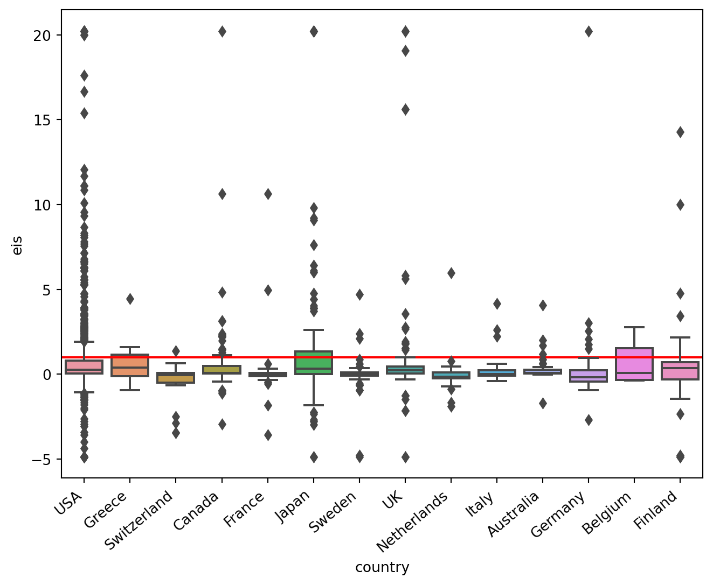

The Fed and Private Consumption (Wonkish)
why inflation might not go down as fast as the Fed believes?
Monetary Policy
Inflation
- The hawkishness of the Federal Reserve (Fed) is determined by how changes in interest rates affect consumer spending, which is the largest component of aggregate demand. The elasticity of intertemporal substitution is a forward-looking measure that can be used to assess the aggressiveness of monetary policy by capturing the sensitivity of private consumption to changes in interest rates. I show that the Fed’s recent projections imply a very tight monetary policy stance (tighter than the market expects) especially in the near term. However, the implied level of elasticity of intertemporal substitution is quite unusual compared to other empirical studies, suggesting that this may trigger strong income effects and inflation may not fall as quickly as the Fed is expecting. As a result, it appears that luck factors matter more for inflation dynamics, as neither the supply-side factors nor the indirect effects of higher interest rates (which appear more relevant empirically) are under the Fed’s direct control.
Introduction
Central banks have begun their tightening cycle to bring an exceptionally high inflation rate down, and are committed to even more tightening if inflation remains high. In assessing the tightness of monetary policy, it is common to compare the policy rate (the rate at which banks lend to each other) to the size of inflation or the level of neutral interest rates, and to compare this distance across time. However, this approach does not tell us much about the expected drop in aggregate demand.
More importantly, comparisons across time are not very meaningful. For example, a 50 basis point increase in the policy rate might have a stronger impact today than it did 20-30 years ago, because a much larger number of people are now leveraged. Therefore, even if the distance between the policy rate and inflation looks larger (or smaller) between two different periods, such comparisons are inconsistent due to differences in the prevailing structure of the economy.
he Federal Reserve’s ability to control inflation is closely linked to how interest rates affect consumer spending. This is because consumer spending accounts for roughly 60% of aggregate demand, which is equivalent to GDP. Therefore, a supplementary (and perhaps more appropriate) way to assess the tightness of monetary policy is to look at the effects of interest rates on private consumption.
The short-term nominal interest rates, which are the Federal Reserve’s main tool for affecting aggregate demand, transmit to private consumption in two broad ways. The first is through a direct channel, which takes into account how interest rates alone affect consumption. The second is through an indirect channel, which only focuses on the second-order effects of interest rate changes on aggregate demand, namely the change in disposable income of households. It is important to note that the indirect effects emanate from the direct impact of the original interest rate change and are therefore a function of consumers’ response to rising interest rates.
In evaluating the right monetary policy stance, it is necessary to make judgments on two interdependent issues:
- How the direct effects would affect consumption.
- Whether the transmission mechanism of monetary policy relies more on the direct or indirect channel.
Inappropriate judgments on the first issue would necessarily lead to misleading or fallacious judgments on the second. While the first issue may seem less controversial, the quantitative impact of monetary policy on private consumption is still ambiguous.
In this post, I will focus on the first issue. Clarifying this issue can help to bring more clarity when assessing monetary policy tightness. For example, if the direct effects are expected to be sufficiently strong, the fall in disposable income will contribute less to the drop in aggregate demand. Otherwise, the potential reliance on the indirect effects implies a more persistent inflation and uncertain outlook, and adds to the factors that the Federal Reserve needs to overcome, since such second-order effects are (together with the supply side factors) not under its direct control.
Interest rates and the price of consumption across time
The effects of interest rates on consumption are a central part of macroeconomic theory. When interest rates rise, there are two main effects:
- The substitution effect: Higher interest rates make it more expensive to consume now, so people tend to save more and consume less.
- The income effect:: Higher interest rates also increase the income that people earn from their savings, which can lead to increased consumption.
The overall effect of interest rates on consumption is ambiguous, and depends on the relative strength of the substitution and income effects. In general, the substitution effect is stronger for people who have lower incomes and less wealth, while the income effect is stronger for people who have higher incomes and more wealth.
The conventional view is that (on aggregate) higher interest rates reduce consumption, as the substitution effect outweighs the income effect. However, the size of the effect is uncertain, and depends on the distribution of income and wealth in the economy.
One way to measure the relative strength of the substitution and income effects is to look at the elasticity of intertemporal substitution (EIS). The EIS is a measure of how responsive people are to changes in interest rates. A higher EIS means that people are more likely to save when interest rates rise, and consume less.
In the next section, I estimate the EIS based on the Fed’s forecasts. This will allow me to extract the implicit judgement that the Fed is making about the effects of interest rates on consumption.
Some illustrative (and inconvenient) Arithmetics
To this end, I will use a conventional macroeconomic approach. This may not allow definite conclusions, but it works well as a proof of concept. Assuming that households are reasonably forward-looking, conventional macroeconomic theory likes to use the so-called Euler equation to study consumption dynamics. People may also be familiar with this equation through the CAMP model, which is used to study the relationship between business cycles and asset prices.
There are various versions of this equation, depending on the application. For the point I want to make here, a conventional approach is sufficient. In this case, and in order to link inflation, interest rates, consumption, income, and substitution effects, I would assume that aggregate consumption follows the rule below (See here or here for a simple example)
\[ E_{t} \Delta \overline{ c_{t+1}}=\sigma \widehat{r_{t}} \]
where
\[ \Delta \overline{ c_{t+1}} = \log(c_{t+1})-\log(c_{t}) \quad (\text{real consumption growth}) \]
\[ \widehat{r_{t}} = \log(r_{t})-\log(r^*) \]
\[ \text{and} \quad r_{t} = i_{t}-\pi_{t+1} \quad ( \text{real risk-free/fund rate with } r^* \equiv \text{long-run values}) \]
The parameter \(\sigma\) is the so-called elasticity of intertemporal substitution, which controls the sensitivity of consumption growth to changes in interest rates1. The higher this value, the more sensitive consumption growth is to a change in interest rates. This parameter also controls the balance between the substitution and income effects. More specifically:
\[ \sigma \begin{cases} < 1 \qquad \text{Income Effect > Substitution Effect} \\ > 1 \qquad \text{Income Effect < Substitution Effect} \\ = 1 \qquad \text{Income Effect = Substitution Effect} \end{cases} \]
An estimate of less than one implies that the income effect dominates the substitution effect and consumption tends to increase after an increase in interest rates. Conversely, when the substitution effect is greater than the income effect (\(\sigma > 1\)), higher interest rates encourage more savings and less borrowing, hence aggregate demand falls. There is also the third case where these two effects cancel each other out, so consumption is insensitive to interest rates. This is irrelevant in the short run, but not implausible in the long run.
Note that the natural interest rate is a function of \(\sigma\), which captures households’ desire to smooth consumption over time. For example, if consumers permanently change their consumption preferences (e.g. becoming more stingy) this affects the path of consumption and, by extension, the supply of savings, which is important for natural interest rates.
In the June statement, the Fed released the following projections:
| Variable | 2022 | 2023 | 2024 | Long-run |
|---|---|---|---|---|
| real GDP growth | 1.7 | 1.7 | 1.9 | 1.8 |
| PCE Inflation | 5.2 | 2.6 | 2.2 | 2 |
| Federal funds rate | 3.4 | 3.4 | 3.4 | 2.5 |
I use these projections to reverse engineer and uncover the parameter \(\sigma\) based on the consumption rule above. As the Federal Reserve does not publish its projections for real consumption growth, I will use real GDP growth instead. In the data, real GDP growth and real consumption growth are strongly correlated (the correlation coefficient is roughly 0.90–0.99), so this approximation does little harm. Therefore, such forecasts imply that the EIS is:
| 2022 | 2023 | 2024 | |
|---|---|---|---|
| Central Scenario | N/A | 4.5 | 5 |
For the year 2022, it was not possible to estimate \(\sigma\), since mathematically, the interest rates were too low for the size of inflation, and therefore the logarithm was not defined. In general, the Fed’s central forecasts imply a rather stable \(\sigma \approx 5\) across the forecast years. Interestingly, this in turn implies that the Fed may need to raise interest rates by another 200 basis points by the end of 2022 in order to validate its assumption.
This evidence suggests that a) the Fed may be assuming that substitution effects outweigh income effects on the aggregate2, which is in line with conventional wisdom, but is also signalling that markets might be underestimating the probability for higher interest rates in the future.
Reality vs the Fed
However, in the current context, the strength of the substitution effects, that is, the size of the elasticity of intertemporal substitution (EIS), also matters for the tightness of monetary policy. To get a sense of this, I used an excellent meta-analysis that collects more than 2,700 published estimates of the EIS across countries, with about half of them focusing on the United States. Based on this study, I show below the distribution of the EIS across countries, including the US. The red horizontal line is when the EIS equals 1, so values above this line indicate when the substitution effect dominates.
The good news is that the Fed’s forecasts suggest that monetary policy is quite tight (more than the market assumes). This is because the estimated value of the elasticity of substitution, \(\sigma\), lies in the range of extreme values. For the size of the substitution effects assumed here, the rise in interest rates implies a rather strong impact on consumption in the near term.
The bad news is that the Fed is quite likely to be wrong. The most likely values of \(\sigma\) (see Figure) suggest that the income effect typically dominates. This means that consumption could still drop, but not as much as the Fed might be expecting. This is because the rich are likely to hold consumption firm, even if interest rates rise. Relative to the case where the substitution effects dominate, consumption takes a smaller hit in this case, but it takes a longer time to recover.
The ugly part is that central banks, including the Fed, have traditionally focused on aggregate outcomes. This was partly due to data limitations, as it was hard to identify distributional effects without large individual-level panels. But it also reflected the conventional view that monetary policy works largely through intertemporal substitution, which was thought to affect everyone in much the same way. Nevertheless, recent recent research is convincingly suggesting that monetary policy works largely through indirect effects. As I noted, income effects are likely to be empirically more relevant than the Fed might be assuming. Practically, this means that the lags of monetary policy might be too long to affect private consumption much.
A Few Further Considerations
My previous post did not aim to provide a comprehensive analysis. To simplify matters, I only focused on consumption-saving choices, taking into account the desire of consumers to smooth consumption over time. However, at times of heightened uncertainty, households may develop another motive for saving: precautionary savings. This is a way of insuring themselves against uncertain labor market prospects. A precautionary savings motive combined with pessimistic sentiment also contributes to a falling aggregate demand. Therefore, even if the Fed gets it wrong with the intertemporal substitution, uncertainty is on its side. All it takes is to spread the fear of recession and aggregate demand (and oil prices) will fall.
Wealth effects, that is the drop in consumption due to the fall in asset prices, is another important channel that affects private consumption. I did not discuss this here either, but I expect that such effects are already incorporated in the Fed’s latest forecasts. In principle, one could use the same strategy that I developed here to uncover what the Fed is expecting, but the consumption rule might need to be changed to Epstein-Zin preferences.
Overall, however, it appears that luck factors are more important for inflation dynamics. Neither the supply side factors nor the indirect effects are under the Fed’s direct control.
Footnotes
Risk aversion and EIS are not separable here. For asset pricing and studying the behaviour of equity premia is important to separate the two. There is a large body of literature that uses, the so-called, Epstein-Zin preferences for this purpose.↩︎
This also implies that the demand for mortgages will also drop. So, house prices might be under real pressure considering the banking sector will cut lending.↩︎